1924 Riots Part 2
{kind=link}
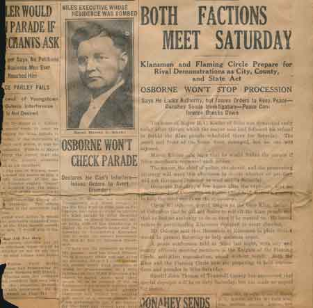
Both factions to march November 1, 1924
{kind=link}
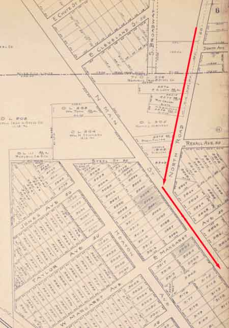
map shows the path the KKK would march from their encampment on North Road.

two intersections where the KK was stopped, searched and turned back
{kind=link}
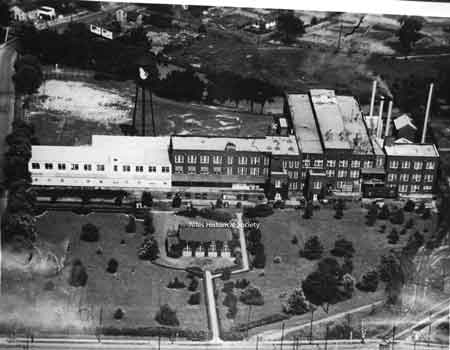
The GE Plant was located at the corner of East Federal and North Main Streets. The B&O and Erie railroad tracks are visible in the bottom right of the view.

view of Robbins Avenue, Linden Avenue and Erie Street
{kind=link}
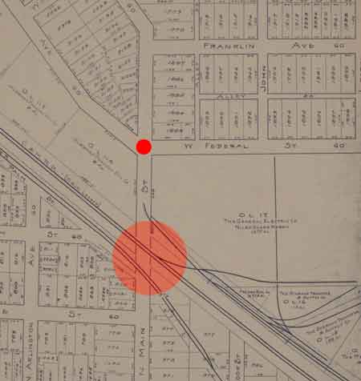
In 1924 there was no underpass but rather an incline and crossing gates that marked a strategic position for the Irish and Italian defenders on North Main Street.

Map shows the main entrances for the anti-Klan forces to stop the Klanners preparing to parade in downtown Niles.
{kind=link}
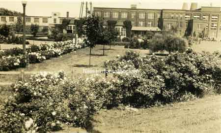
The main confrontation between the two forces took place in the afternoon at the Railroad crossing and G.E. Plant at the intersection of East Federal Street and North Main Street

In 1924 the Erie and B&O railroad crossing was an inclined roadway which aided the anti-klan forces in preventing the Klan autos from proceeding to the downtown area.

Swearing-in of camp police at KKK section
{kind=link}
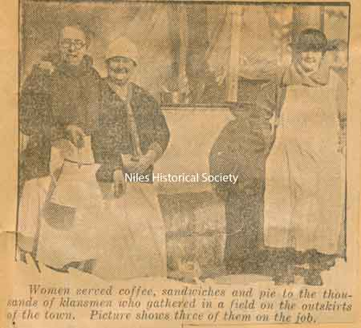
Women of the Klan served food while the women on the other side carried guns in their aprons to the East End so the men could be armed.
{kind=link}
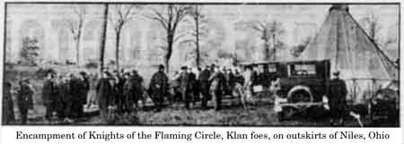
Encampment of the Knights of the Flaming Circle.

Badge presented to Chief Keogan Powell of Youngstown, Ohio in recognition of his excellent services as the head of the local police department. May 6, 1924.
{kind=link}
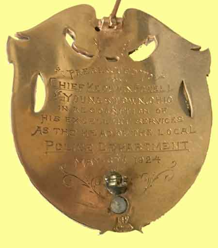
Badge presented to Chief Keogan Powell of Youngstown, Ohio in recognition of his excellent services as the head of the local police department. May 6, 1924.

Conelly bares early incident of Niles warfare

Sheriff Thomas pleading for a truce and the firing begins a few minutes later.
{kind=link}
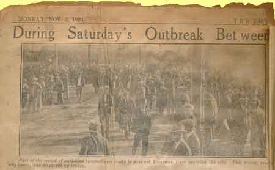
Part of the crowd of anti-klan sympathizers ready to prevent the klansmen from entering the city.

One of the men wounded in the clash of the Ku Klux Klansmen and Knights of the Flaming Circle is shown being placed in the Niles Police ambulance.
{kind=link}
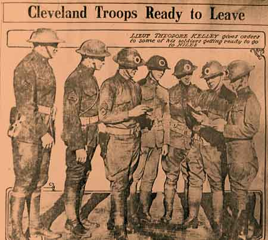
Troops ready to leave

Machine guns were ready as Youngstown

Youngstown Machine Gun Company entering Niles. When Governor Donaheynordered out the militia, guardsmen took command of Cleveland, Akron, Warren and Youngstown busses and rushed to Niles at top speed.
{kind=link}
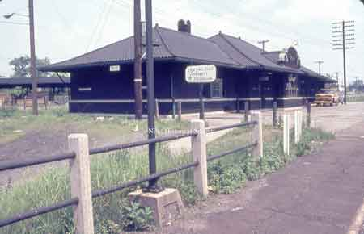
Erie railroad station where the special train was prevented from unloading the klansmen.
{kind=link}
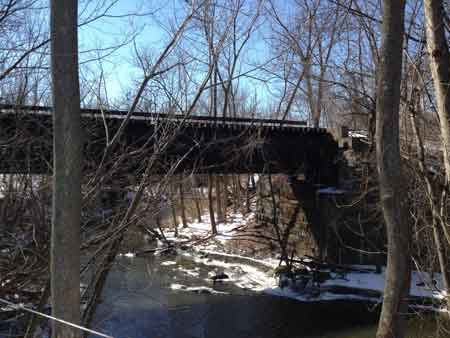
There were rumors that the Erie Railroad bridge over Mosquito Creek had been rigged with dynamite. This was done to prevent the special train with klansmen from arriving at the Erie Railroad grade crossing at the GE plant and outflanking the Flaming Circle crowd.

Colonel L.S. Connelly of Cleveland and General Benson W. Hough of the 135th Regiment, O.N.G. Columbus, were in charge of troops now enforcing military law at Niles. General Hough is United States District Attorney at Cincinnati.

Ohio militiamen march through the streets of Niles in riot formation, lining up in the V-shaped formation, preparing to march down a street.

Guardsmen satationed in Niles with machinegun.
{kind=link}
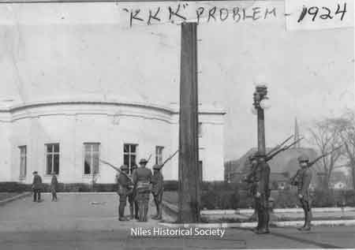
Ohio National Guard protecting the perimeter of the William McKinley Memorial grounds after martial law had been declared.

Complete list of injured in Niles Trouble.
{kind=link}
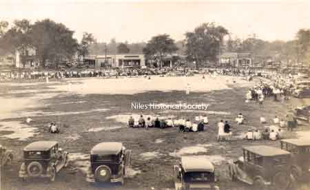
GE baseball field on East Federal Street across from gas station which served as a temporary medical clinic for the anti-klansmen who had been injured.

How Niles looked during the street fighting Saturday, November 1, 1924

C:
{kind=link}
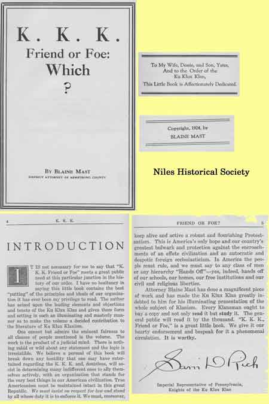